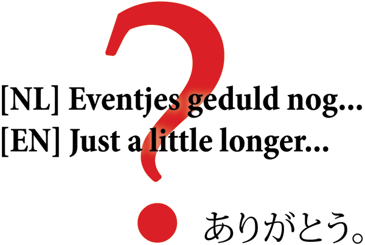

Produce your own sets of exercise material for free (with examples and documentation)
Maak eigen rekentaken & oefenmateriaal—met nakijkvellen — gratis on—line (inclusief voorbeelden en documentatie)
And the Ideas and TODO list...